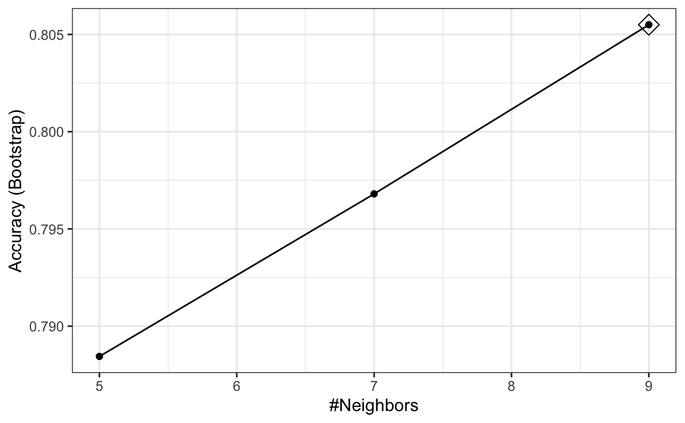
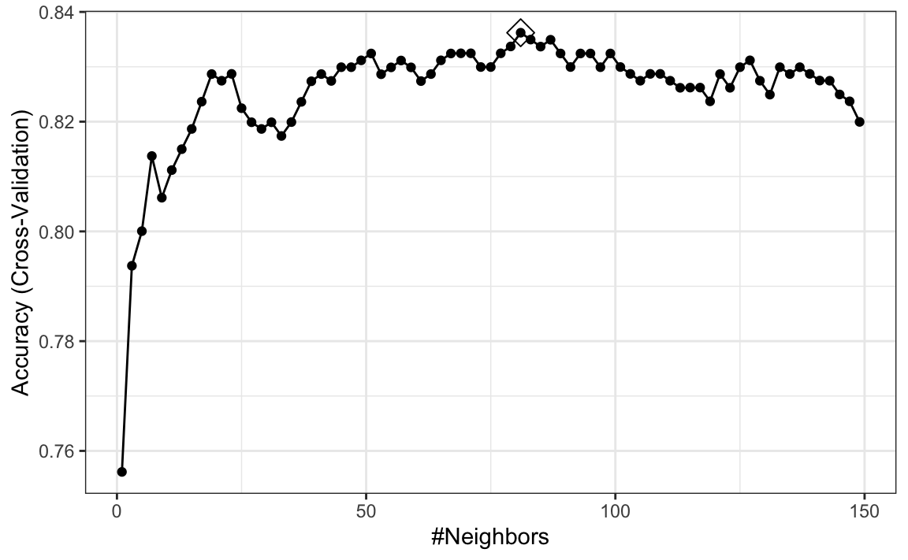
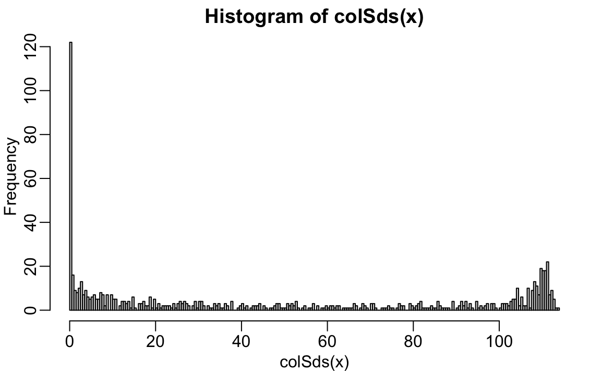
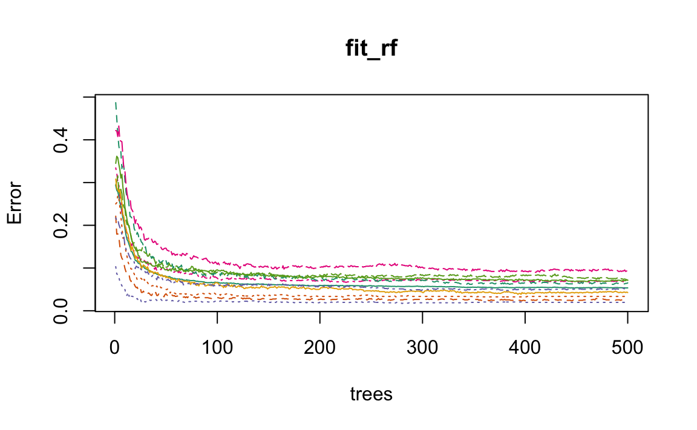
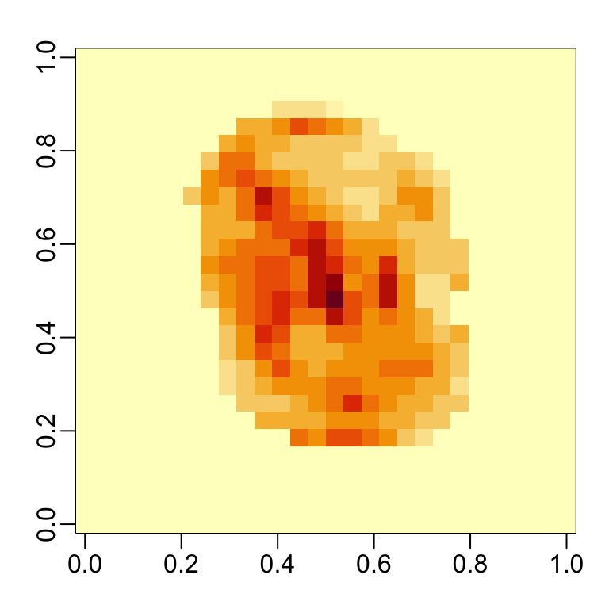
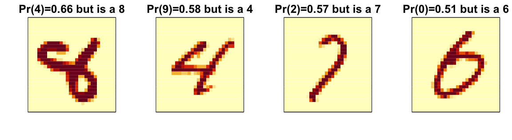

#> randomForest 4.7-1.2
#> Type rfNews() to see new features/changes/bug fixes.
#>
#> Attaching package: 'randomForest'
#> The following object is masked from 'package:ggplot2':
#>
#> margin31 Machine learning in practice
Now that we have learned several methods and explored them with simple examples, we will try them out on a real example: the MNIST digits.
We can load this data using the following dslabs package:
library(dslabs)
mnist <- read_mnist()The dataset includes two components, a training set and a test set:
names(mnist)
#> [1] "train" "test"Each of these components includes a matrix with features in the columns:
dim(mnist$train$images)
#> [1] 60000 784and vector with the classes as integers:
Because we want this example to run on a small laptop and in less than one hour, we will consider a subset of the dataset. We will sample 10,000 random rows from the training set and 1,000 random rows from the test set:
When fitting models to large datasets, we recommend using matrices instead of data frames, as matrix operations tend to be faster. In the caret package, predictor matrices must have column names to track features accurately during prediction on the test set. If the matrices lack column names, you can assign names based on their position:
31.1 The caret package
We have already learned about several machine learning algorithms. Many of these algorithms are implemented in R. However, they are distributed via different packages, developed by different authors, and often use different syntax. The caret package tries to consolidate these differences and provide consistency. It currently includes over 200 different methods which are summarized in the caret package manual1. Keep in mind that caret does not include the packages needed to run each possible algorithm. To apply a machine learning method through caret you still need to install the library that implement the method. The required packages for each method are described in the package manual.
The caret package also provides a function that performs cross validation for us. Here we provide some examples showing how we use this helpful package. We will first use the 2 or 7 example to illustrate and, in later sections, we use the package to run algorithms on the larger MNIST dataset.
31.1.1 The train function
The R functions that fit machine algorithms are all slightly different. Functions such as lm, glm, qda, lda, knn3, rpart and randomForrest use different syntax, have different argument names and produce objects of different types.
The caret train function lets us train different algorithms using similar syntax. So, for example, we can type the following to train three different models:
As we explain in more detail in Section 31.1.3, the train function selects parameters for you using a resampling method to estimate the MSE, with bootstrap as the default.
31.1.2 The predict function
The predict function is very useful for machine learning applications. This function takes an object from a fitting function and a data frame with features \(\mathbf{x}\) for which to predict, and returns predictions for these features.
Here is an example with logistic regression:
In this case, the function is simply computing
\[ \hat{p}(\mathbf{x}) = g^{-1}\left(\hat{\beta}_0 + \hat{\beta}_1 x_1 + \hat{\beta}_2 x_2 \right) \text{ with } g(p) = \log\frac{p}{1-p} \implies g^{-1}(\mu) = \frac{1}{1-e^{-\mu}} \]
for the x_1 and x_2 in the test set mnist_27$test. With these estimates in place, we can make our predictions and compute our accuracy:
However, note that predict does not always return objects of the same type; it depends on what type of object it is applied to. To learn about the specifics, you need to look at the help file specific for the type of fit object that is being used.
predict is actually a special type of function in R called a generic function. Generic functions call other functions depending on what kind of object it receives. So if predict receives an object coming out of the lm function, it will call predict.lm. If it receives an object coming out of glm, it calls predict.glm. If the fit is from knn3, it calls predict.knn3, and so on. These functions are similar but not exactly. You can learn more about the differences by reading the help files:
?predict.glm
?predict.qda
?predict.knn3There are many other versions of predict and many machine learning algorithms define their own predict function.
As with train, the caret packages unifies the use of predict with the function predict.train. This function takes the output of train and produces prediction of categories or estimates of \(p(\mathbf{x})\).
The code looks the same for all methods:
This permits us to quickly compare the algorithms. For example, we can compare the accuracy like this:
fits <- list(glm = y_hat_glm, qda = y_hat_qda, knn = y_hat_knn)
sapply(fits, function(fit) confusionMatrix(fit, mnist_27$test$y)$overall[["Accuracy"]])
#> glm qda knn
#> 0.775 0.815 0.83531.1.3 Resampling
When an algorithm includes a tuning parameter, train automatically uses a resampling method to estimate MSE and decide among a few default candidate values. To find out what parameter or parameters are optimized, you can read the caret manual2 or study the output of:
modelLookup("knn")To obtain all the details of how caret implements kNN you can use:
getModelInfo("knn")If we run it with default values:
train_knn <- train(y ~ ., method = "knn", data = mnist_27$train)you can quickly see the results of the cross validation using the ggplot function. The argument highlight highlights the max:
ggplot(train_knn, highlight = TRUE)
By default, the resampling is performed by taking 25 bootstrap samples, each comprised of 25% of the observations.
For the kNN method, the default is to try \(k=5,7,9\). We change this using the tuneGrid argument. The grid of values must be supplied by a data frame with the parameter names as specified in the modelLookup output.
Here we present an example where we try out 38 values between 1 and 75. To do this with caret, we need to define a column named k, so we use this: data.frame(k = seq(1, 75, 2)). Note that when running this code, we are fitting 38 versions of kNN to 25 bootstrapped samples. Since we are fitting \(38 \times 25 = 950\) kNN models, running this code will take several seconds.
train_knn <- train(y ~ ., method = "knn",
data = mnist_27$train,
tuneGrid = data.frame(k = seq(1, 75, 2)))
ggplot(train_knn, highlight = TRUE)
Because resampling methods are random procedures, the same code can result in different results. To assure reproducible results you should set the seed, as we did at the start of this chapter.
To access the parameter that maximized the accuracy, you can use this:
train_knn$bestTune
#> k
#> 37 73and the best performing model like this:
train_knn$finalModel
#> 73-nearest neighbor model
#> Training set outcome distribution:
#>
#> 2 7
#> 401 399The function predict will use this best performing model. Here is the accuracy of the best model when applied to the test set, which we have not yet used because the cross validation was done on the training set:
confusionMatrix(predict(train_knn, mnist_27$test, type = "raw"),
mnist_27$test$y)$overall["Accuracy"]
#> Accuracy
#> 0.825Bootstrapping is not always the best approach to resampling (see @knn-in-practice, for an example). If we want to change our resampling method, we can use the trainControl function. For example, the code below runs 10-fold cross validation. This means we have 10 samples using 90% of the observations to train in each sample. We accomplish this using the following code:
control <- trainControl(method = "cv", number = 10, p = .9)
train_knn_cv <- train(y ~ ., method = "knn",
data = mnist_27$train,
tuneGrid = data.frame(k = seq(1, 71, 2)),
trControl = control)31.2 Preprocessing
We often transform predictors before running the machine algorithm. We also remove predictors that are clearly not useful. We call these steps preprocessing.
Examples of preprocessing include standardizing the predictors, taking the log transform of some predictors, removing predictors that are highly correlated with others, and removing predictors with very few non-unique values or close to zero variation.
For example, we can run the nearZero function from the caret package to see that several features do not vary much from observation to observation. We can see that there is a large number of features with close to 0 variability:
library(matrixStats)
sds <- colSds(x)
hist(sds, breaks = 256)
This is expected because there are parts of the image that rarely contain writing (dark pixels).
The caret packages includes a function that recommends features to be removed due to near zero variance:
nzv <- nearZeroVar(x)We can see the columns recommended for removal are the near the edges:

So we end up removing
length(nzv)
#> [1] 532predictors.
The caret package features the preProcess function, which allows users to establish a predefined set of preprocessing operations based on a training set. This function is designed to apply these operations to new datasets without recalculating anything on the test set, ensuring that all preprocessing steps are consistent and derived solely from the training data.
Below is an example demonstrating how to remove predictors with near-zero variance and then center the remaining predictors:
pp <- preProcess(x, method = c("nzv", "center"))
centered_subsetted_x_test <- predict(pp, newdata = x_test)
dim(centered_subsetted_x_test)
#> [1] 1000 252Additionally, the train function in caret includes a preProcess argument that allows users to specify which preprocessing steps to apply automatically during model training. We will explore this functionality further in the context of a k-Nearest Neighbors model @knn-in-practice.
31.3 Parallelization
During cross-validation or bootstrapping, the process of fitting models to different samples or using varying parameters can be performed independently. Imagine you are fitting 100 models; if you had access to 100 computers, you could theoretically speed up the process by a factor of 100 by fitting each model on a separate computer and then aggregating the results. In reality, most modern computers, including many personal computers, are equipped with multiple processors that allow for such parallel execution. This method, known as parallelization, leverages these multiple processors to conduct several computational tasks simultaneously, significantly accelerating the model training process. By distributing the workload across different processors, parallelization makes it feasible to manage large datasets and complex modeling procedures efficiently.
The caret package is set up to run in parallel but you have to let R know that you are want to parallelize your work. To do this we can use the doParallel package:
library(doParallel)
nc <- detectCores() - 1
cl <- makeCluster(nc) # it is convention to leave 1 core for OS
registerDoParallel(cl)If you do use parallelization, make sure to let R know you are done with the following lines of code:
When parallelizing tasks across multiple processors, it’s important to consider the risk of running out of memory. Each processor might require a copy of the data or substantial portions of it, which can multiply overall memory demands. This is especially challenging if the data or models are large.
31.4 k-nearest neighbors
Before starting this section, note that the first two calls to the train function in the code below can take several hours to run. This is a common challenge when training machine learning algorithms since we have to run the algorithm for each cross validation split and each set of tuning parameters being considered. In the next section, we will provide some suggestions on how to predict the duration of the process and ways to reduce.
As we will see soon, the optimal \(k\) for the MNIST data is between 1 and 7. For small values of \(k\), bootstrapping can be problematic for estimating MSE for a k-Nearest Neighbors (kNN). This is because bootstrapping involves sampling with replacement from the original dataset which implies the closest neighbor will often appear twice but considered two independent observations by kNN. This is a unrealistic scenario that can distort the estimate MSE when, for example, \(k=3\). We therefore us cross-validation to estimate our MSE.
The first step is to optimize for \(k\).
train_knn <- train(x, y, method = "knn",
preProcess = "nzv",
trControl = trainControl("cv", number = 20, p = 0.95),
tuneGrid = data.frame(k = seq(1, 7, 2)))Once we optimize our algorithm, the predict function defaults to using the best performing algorithm fit with the entire training data:
y_hat_knn <- predict(train_knn, x_test, type = "raw")We achieve relatively high accuracy:
confusionMatrix(y_hat_knn, factor(y_test))$overall["Accuracy"]
#> Accuracy
#> 0.95331.4.1 Dimension reduction with PCA
An alternative to removing low variance columns directly is to use dimension reduction on the feature matrix before applying the algorithms.
pca <- prcomp(x)We can actually explain, say, 75% of the variability in the predictors with a small number of dimensions:
We can then re-run our algorithm on these 33 features:
fit_knn_pca <- knn3(pca$x[,1:p], y, k = train_knn$bestTune)When predicting, it is important that we not use the test set when finding the PCs nor any summary of the data, as this could result in overtraining. We therefrom compute the averages needed for centering and the rotation on the training set:
We obtain similar accuracy, while using only 33 dimensions:
confusionMatrix(y_hat_knn_pca, factor(y_test))$overall["Accuracy"]
#> Accuracy
#> 0.959In this example, we used the \(k\) optimized for the raw data, not the principal components. Note that to obtain an unbiased MSE estimate we have to recompute the PCA for each cross-validation sample and apply to the validation set. Because the train function includes PCA as one of the available preprocessing operations we can achieve this with this modification of the code above:
train_knn_pca <- train(x, y, method = "knn",
preProcess = c("nzv", "pca"),
trControl = trainControl("cv", number = 20, p = 0.95,
preProcOptions = list(pcaComp = p)),
tuneGrid = data.frame(k = seq(1, 7, 2)))
y_hat_knn_pca <- predict(train_knn_pca, x_test, type = "raw")
confusionMatrix(y_hat_knn_pca, factor(y_test))$overall["Accuracy"]
#> Accuracy
#> 0.962A limitation of this approach is that we don’t get to optimize the number of PCs used in the analysis. To do this we need to write our own method. The caret manual4 describe how to do this.
31.5 Random Forest
With the random forest algorithm several parameters can be optimized, but the main one is mtry, the number of predictors that are randomly selected for each tree. This is also the only tuning parameter that the caret function train permits when using the default implementation from the randomForest package.
library(randomForest)
train_rf <- train(x, y, method = "rf",
preProcess = "nzv",
tuneGrid = data.frame(mtry = seq(5, 15)))
y_hat_rf <- predict(train_rf, x_test, type = "raw")Now that we have optimized our algorithm, we are ready to fit our final model:
y_hat_rf <- predict(train_rf, x_test, type = "raw")As with kNN, we also achieve high accuracy:
confusionMatrix(y_hat_rf, y_test)$overall["Accuracy"]
#> Accuracy
#> 0.951By optimizing some of the other algorithm parameters, we can achieve even higher accuracy.
31.6 Testing and improving computation time
The default method for estimating accuracy used by the train function is to test prediction on 25 bootstrap samples. This can result in long compute times. For example, if we are considering several values, say 10, of the tuning parameters, we will fit the algorithm 250 times. We can use the system.time function to estimate how long it takes to run the algorithm once:
nzv <- nearZeroVar(x)
system.time({fit_rf <- randomForest(x[, -nzv], y, mtry = 9)})
#> user system elapsed
#> 61.58 1.18 62.95and use this to estimate the total time for the 250 iterations. In this case it will be several hours.
One way to reduce run time is to use k-fold cross validation with a smaller number of test sets. A popular choice is leaving out 5 test sets with 20% of the data. To use this we set the trControl argument in train to trainControl(method = "cv", number = 5, p = .8).
For random forest, we can also speed up the training step by running less trees per fit. After running the algorithm once, we can use the plot function to see how the error rate changes as the number of trees grows.
Here we can see that error rate stabilizes after about 200 trees:
plot(fit_rf)
We can use this finding to speed up the cross validation procedure. Specifically, because the default is 500, by adding the argument ntree = 200 to the call to train above, the procedure will finish 2.5 times faster.
31.7 Variable importance
The following function computes the importance of each feature:
imp <- importance(fit_rf)We can see which features are being used most by plotting an image:

31.8 Diagnostics
An important part of data analysis is visualizing results to determine why we are failing. How we do this depends on the application. Below we show the images of digits for which we made an incorrect prediction. Here are some errors for the random forest:

By examining errors like this, we often find specific weaknesses to algorithms or parameter choices and can try to correct them.
31.9 Ensembles
The idea of an ensemble is similar to the idea of combining data from different pollsters to obtain a better estimate of the true support for each candidate.
In machine learning, one can usually greatly improve the final results by combining the results of different algorithms.
Here is a simple example where we compute new class probabilities by taking the average of random forest and kNN. We can see that the accuracy improves:
We have just built an ensemble with just two algorithms. By combing more similarly performing, but uncorrelated, algorithms we can improve accuracy further.
31.10 Exercises
1. In the exercises in Chapter 30 we saw that changing maxnodes or nodesize in the randomForest function improved our estimate. Let’s use the train function to help us pick these values. From the caret manual we see that we can’t tune the maxnodes parameter or the nodesize argument with randomForest, so we will use the Rborist package and tune the minNode argument. Use the train function to try values minNode <- seq(5, 250, 25). See which value minimizes the estimated RMSE.
2. This **dslabs* dataset includes a matrix x:
with the gene expression measured on 500 genes for 189 biological samples representing seven different tissues. The tissue type is stored in y:
table(tissue_gene_expression$y)Split the data in training and test sets, then use kNN to predict tissue type and see what accuracy you obtain. Try it for \(k = 1, 3, \dots, 11\).
3. We are going to apply LDA and QDA to the tissue_gene_expression dataset. We will start with simple examples based on this dataset and then develop a realistic example.
Create a dataset with just the classes cerebellum and hippocampus (two parts of the brain) and a predictor matrix with 10 randomly selected columns. Estimate the accuracy of LDA.
4. In this case, LDA fits two 10-dimensional normal distributions. Look at the fitted model by looking at the finalModel component of the result of train. Notice there is a component called means that includes the estimate means of both distributions. Plot the mean vectors against each other and determine which predictors (genes) appear to be driving the algorithm.
5. Repeat exercises 3 with QDA. Does it have a higher accuracy than LDA?
6. Are the same predictors (genes) driving the algorithm? Make a plot as in exercise 3.
7. One thing we see in the previous plot is that the value of predictors correlate in both groups: some predictors are low in both groups while others are high in both groups. The mean value of each predictor, colMeans(x), is not informative or useful for prediction and often, for interpretation purposes, it is useful to center or scale each column. This can be achieved with the preProcessing argument in train. Re-run LDA with preProcessing = "scale". Note that accuracy does not change but see how it is easier to identify the predictors that differ more between groups in the plot made in exercise 4.
8. In the previous exercises, we saw that both approaches worked well. Plot the predictor values for the two genes with the largest differences between the two groups in a scatterplot to see how they appear to follow a bivariate distribution as assumed by the LDA and QDA approaches. Color the points by the outcome.
9. Now we are going to increase the complexity of the challenge slightly: we will consider all the tissue types.
What accuracy do you get with LDA?
10. We see that the results are slightly worse. Use the confusionMatrix function to learn what type of errors we are making.
11. Plot an image of the centers of the seven 10-dimensional normal distributions.
12. Make a scatterplot along with the prediction from the best fitted model.
13. Use the rpart function to fit a classification tree to the tissue_gene_expression dataset. Use the train function to estimate the accuracy. Try out cp values of seq(0, 0.05, 0.01). Plot the accuracy to report the results of the best model.
14. Study the confusion matrix for the best fitting classification tree. What do you observe happening for placenta?
15. Notice that placentas are called endometrium more often than placenta. Note also that the number of placentas is just six, and that, by default, rpart requires 20 observations before splitting a node. Thus it is not possible with these parameters to have a node in which placentas are the majority. Rerun the above analysis, but this time permit rpart to split any node by using the argument control = rpart.control(minsplit = 0). Does the accuracy increase? Look at the confusion matrix again.
16. Plot the tree from the best fitting model obtained in exercise 11.
17. We can see that with just six genes, we are able to predict the tissue type. Now let’s see if we can do even better with a random forest. Use the train function and the rf method to train a random forest. Try out values of mtry ranging from, at least, seq(50, 200, 25). What mtry value maximizes accuracy? To permit small nodesize to grow as we did with the classification trees, use the following argument: nodesize = 1. This will take several seconds to run. If you want to test it out, try using smaller values with ntree. Set the seed to 1990.
18. Use the function varImp on the output of train and save it to an object called imp.
19. The rpart model we ran above produced a tree that used just six predictors. Extracting the predictor names is not straightforward, but can be done. If the output of the call to train was fit_rpart, we can extract the names like this:
ind <- !(fit_rpart$finalModel$frame$var == "<leaf>")
tree_terms <-
fit_rpart$finalModel$frame$var[ind] |>
unique() |>
as.character()
tree_termsWhat is the variable importance in the random forest call for these predictors? Where do they rank?
20. Extract the top 50 predictors based on importance, take a subset of x with just these predictors and apply the function heatmap to see how these genes behave across the tissues. We will introduce the heatmap function in Chapter 32.
21. Previously, we compared the conditional probability \(p(\mathbf{x})\) give two predictors \(\mathbf{x} = (x_1, x_2)^\top\) to the fit \(\hat{p}(\mathbf{x})\) obtained with a machine learning algorithm by making image plots. The following code can be used to make these images and include a curve at the values of \(x_1\) and \(x_2\) for which the function is \(0.5\):
plot_cond_prob <- function(x_1, x_2, p){
data.frame(x_1 = x_1, x_2 = x_2, p = p) |>
ggplot(aes(x_1, x_2)) +
geom_raster(aes(fill = p), show.legend = FALSE) +
stat_contour(aes(z = p), breaks = 0.5, color = "black") +
scale_fill_gradientn(colors = c("#F8766D", "white", "#00BFC4"))
}We can see the true conditional probability for the 2 or 7 example like this:
with(mnist_27$true_p, plot_cond_prob(x_1, x_2, p))Fit a kNN model and make this plot for the estimated conditional probability. Hint: Use the argument newdata = mnist27$train to obtain predictions for a grid points.
22. Notice that, in the plot made in exercise 1, the boundary is somewhat wiggly. This is because kNN, like the basic bin smoother, does not use a kernel. To improve this we could try loess. By reading through the available models part of the caret manual, we see that we can use the gamLoess method. We need to install the gam package, if we have not done so already. We see that we have two parameters to optimize:
modelLookup("gamLoess")
#> model parameter label forReg forClass probModel
#> 1 gamLoess span Span TRUE TRUE TRUE
#> 2 gamLoess degree Degree TRUE TRUE TRUEUse cross-validation to pick a span between 0.15 and 0.75. Keep degree = 1. What span does cross-validation select?
23. Show an image plot of the estimate \(\hat{p}(x,y)\) resulting from the model fit in the exercise 2. How does the accuracy compare to that of kNN? Comment on the difference between the estimate obtained with kNN.
24. Use the mnist_27 training set to build a model with several of the models available from the caret package. For example, you can try these:
models <- c("glm", "lda", "naive_bayes", "svmLinear", "gamboost",
"gamLoess", "qda", "knn", "kknn", "loclda", "gam", "rf",
"ranger","wsrf", "Rborist", "avNNet", "mlp", "monmlp", "gbm",
"adaboost", "svmRadial", "svmRadialCost", "svmRadialSigma")We have not explained many of these, but apply them anyway using train with all the default parameters. Keep the results in a list. You might need to install some packages. Keep in mind that you will likely get some warnings.
25. Now that you have all the trained models in a list, use sapply or map to create a matrix of predictions for the test set. You should end up with a matrix with length(mnist_27$test$y) rows and length(models) columns.
26. Compute accuracy for each model on the test set.
27. Build an ensemble prediction by majority vote and compute its accuracy.
28. Earlier we computed the accuracy of each method on the training set and noticed they varied. Which individual methods do better than the ensemble?
29. It is tempting to remove the methods that do not perform well and re-do the ensemble. The problem with this approach is that we are using the test data to make a decision. However, we could use the accuracy estimates obtained from cross validation with the training data. Obtain these estimates and save them in an object.
30. Now let’s only consider the methods with an estimated accuracy of 0.8 when constructing the ensemble. What is the accuracy now?
31. Note that if two machine algorithms methods predict the same outcome, ensembling them will not change the prediction. For each pair of algorithms compare the percent of observations for which they make the same prediction. Use this to define a function and then use the heatmap function to visualize the results. Hint: use the method = "binary" argument in the dist function.
32. Note that each method can also produce an estimated conditional probability. Instead of majority vote, we can take the average of these estimated conditional probabilities. For most methods, we can the use the type = "prob" in the train function. Note that some of the methods require you to use the argument trControl=trainControl(classProbs=TRUE) when calling train. Also, these methods do not work if classes have numbers as names. Hint: change the levels like this:
dat$train$y <- recode_factor(dat$train$y, "2"="two", "7"="seven")
dat$test$y <- recode_factor(dat$test$y, "2"="two", "7"="seven")33. In this chapter, we illustrated a couple of machine learning algorithms on a subset of the MNIST dataset. Try fitting a model to the entire dataset.